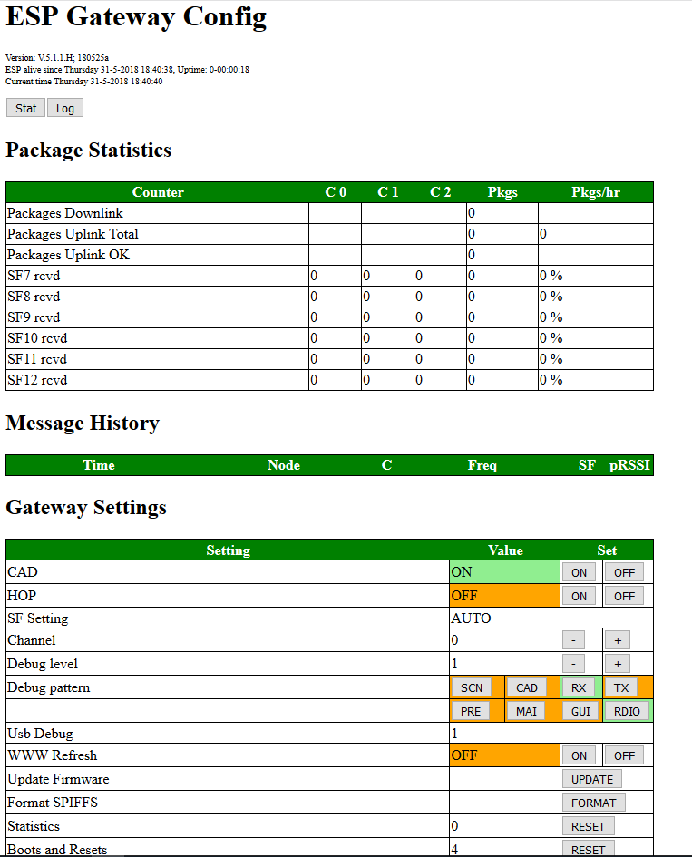

This is the 5th generation of software implementing LoRa gateway function on a platform consisting of an ESP8266 mcu and a sx1276 radio. Unlike the previous versions of the gateway, this version will listen for all available Spreading Factors on a single frequency.
There are two major ways to set the configuration of the Gateway:
In order to avoid having to use both options, we try to make most settings availble on both interfaces. But in practise the .h file is used to make configuration changes that are more permanent and the user interface is used to set everyday parameters and things that change more often.
Most parameters that can be set are compile-time directives so that code is compiled or not based on the value of the directive in the ESP-sc-gateway.h file. This way, the code base can be kept small when functions are not used. Example: Support for Wifi Manager can be turned ON or OFF based on the setting of WIFIMANAGER in the ESP-sc-gway.h file.
#define WIFIMANAGER 0
By changing the definition to "1" the complete functionality to use Wifi Manager is included in the code and compiled. By using "0" all functions relating to this functionality is excluded from the gateway code.
Several parameters or compiler directives can be set in the .h file such as:
DEBUG 1; Initial value of the debug variable. _STRICT_CH 0; Leave this parameter on 0 unless you like to correct the frequency/sf set by the backend._CADSTATISTICS 1; This parameter detemines whether or not the gateway will report statistics on its use. This like total messages received etc. will or will not be reported. If you set this parameter to 2, it will gather statistics on SF of messages received and report through the web interface.MAX_STAT 20; Sets the number of lines in the web interface and records that are kept in memory of the last messages sucessfully received.WIFIMANAGER 0; Set to OFF by default. If you like to use WiFi manager, please set it to 1AP_NAME "<Name your gateway accesspoint>";AP_PASSWD "<Your AccessPoint password>";GATEWAYMGT 1;CFG_sx1276_radio; Let this one be defined in this version. The code will support sx1272 with probably minor modifications as well, but this has not been tested. CONFIGFILE "/gwayConfig.txt"; This parameter tells us the name of the SPIFFS file used to store the configuration data._LOCUDPPORT 1700_PULL_INTERVAL 30_STAT_INTERVAL 60_NTP_INTERVAL 3600_TTNPORT 1700_TTNSERVER "router.eu.thethings.network" _THINGPORT <Your Port>; Second backend server to send messages to. Leave undefined (comment #define out) if not used_THINGSERVER "<Your Backend DNS name>"; Second backend server to send messages to. Leave undefined (comment #define out) if not usedGATEWAYNODE 0; #if GATEWAYNODE==1
#define _DEVADDR { 0x26, 0x01, 0x15, 0x3D }
#define _APPSKEY { 0x00, 0x00, 0x00, 0x00, 0x00, 0x00, 0x00, 0x00, 0x00, 0x00, 0x00, 0x00, 0x00, 0x00, 0x00, 0x00 }
#define _NWKSKEY { 0x00, 0x00, 0x00, 0x00, 0x00, 0x00, 0x00, 0x00, 0x00, 0x00, 0x00, 0x00, 0x00, 0x00, 0x00, 0x00 }
#define _SENSOR_INTERVAL 300
#endif_DESCRIPTION "ESP Gateway"_EMAIL "<Your Email>"_PLATFORM "ESP8266"_LAT <Your LAT>_LON <Your LON>_ALT <Your ALT>A_SERVER 1; Enable the webserver. Do not touch unless you know what you are doingA_REFRESH <seconds> //seconds between webpage refresh. 0 stops automatic refreshA_SERVERPORT 80A_MAXBUFSIZE 192_BAUDRATE 115200 // Do not touchMost parameters starting with a "_" are parameters only. Please only change these if you know what you are doing. If the parameter contains a "<xxx>" it means that you have to put your own values there. After all, it does not make sense to put my email address or GPS data in your configuration.
The remaning part of the #define settings should be to include or not include certain parts of the code based on your own preference.
This part describes the GUI and how to set parameters. And of course my advise what parameters to set :-).
First of all: Determine the IP address of your single channel gateway. It can be that you set a fixed address in your router, but it could also be tat the router hands out addresses based on its own preference. Should you not know what addres is assigned by the router, remember that the single channel gateway will output the IP address and other important settings over USB during boot-up. So looking at the output on USB is a simple way to get the IP address (and it may be the only way for you).
When starting your GUI this is the first screen you will see.

and the bottom half of the screen.

So let's explain the GUI in more detail. The GUI has a few sections:
The title part contains a little information about the Gateway such as the time it was activated and how long the gateway is active at the moment. It also contains the version of the software.
A few important buttons that activate pop-up screens showing other information that is not present on the main GUI screen. The LOG button for example opens a popup with a text editor containing all messages received by the gateway (.csv style). When a message isreceived the system will log its details in the SPIFFS filesystem. Because of the memory limitation of the ESP module, the last 100 files are saved on the chip and previous ones are deleted as soon as memory runs out. Still, it allows te used to anayse messages longs after these have been received by the gateway.
This section contains the statistical info of all the messages that have been received by the gateway. It displays per spreading factor and per channel how many messages were received and display the amount of messages processed per hour.
This section shows the last 20 messages received by the gateway. Of every message we record the time that it was received, the sebsir ID, the channel and the spreading factor used for sending the message etc.
| Parameter | Allowed Values | Default Value | Description |
| CAD | Yes or No | Yes | Set the Channel Activity Detection option. CAD allows the gateway to scan all Spreading factors in the frequency band |
| HOP | yes or NO | NO | Specify whether frequency hopping should be enabled. Frequency hopping will make the gateway work on more than one channel. This mode is highly experimental and does not work correctly. the user is strongly advised NOT to use HOP. |
| SF | 7 to 12 | 9 | Spreading Factor setting. If CAD is enabled (see above) the Spreading Factor is automatically set (AUTO) |
| Channel | 0 to 9 | 0 | The channel that the Gateway should work on. If HOP is set (see above) the frequency will shift between the first 3 well known frequencies |
| Debug Level | 0 to 3 | ||
This section shows some system parameters. There is nothing to set here except when using an ESP8266 module, in this case the yser can set the system clock either to 80MHz or 160MHz.
There are (at least) two seperate documents that apply to this gateway:
Datasheets for RFM95 and SX1276 should be the same. However, the HopeRF document dontains confusing information especially in the registers description are where RSSI for example (regaister 0x1B ?) is concerned.
RSSI stands for Received Signal Strength Indicator is is measured on the receiver to determine the signal quality of the sender. Normal RSSI can be measured any time at the receiver side by reading regaister 0x1B. The SX1276/RFM95 transceiver contains a special register 0x1A that contains theaverage packet RSSI information.
The RSSI function is used by CAD to determine if we have received a message. This is not as the RFM95 is designed, after all new messages might be received that are below the noise floor and this using RSSI is not the most reliable process.
The correct RSSI sample can be computed (according to the RFM95 manual para 4.2.5.3) by adding TS_RE + TS_RSSI
In the sx1276 datasheet we find that DIO 0 and DIO 1 are used to handle CAD interrupts and for message reception. So where we would only use dio0 in the version 3.x of the gateway, we now use dio0 AND dio1 in order to detect CAD and RX Timeout evemts. This also means for users that the have to modify their gateway and set the pins correctly in the loraModem.h file.